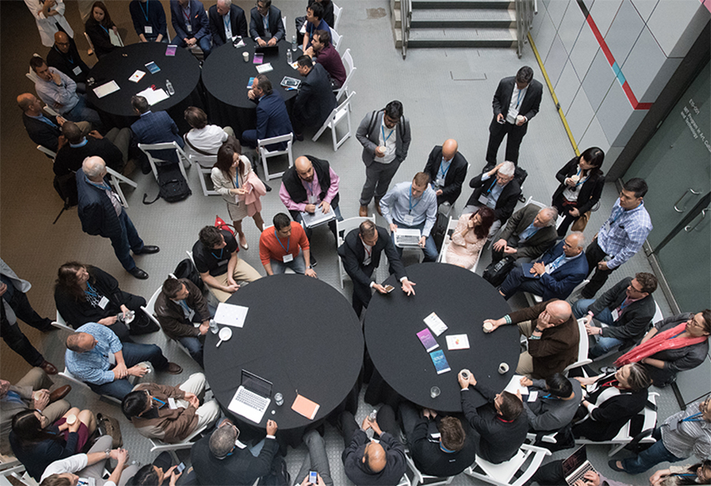
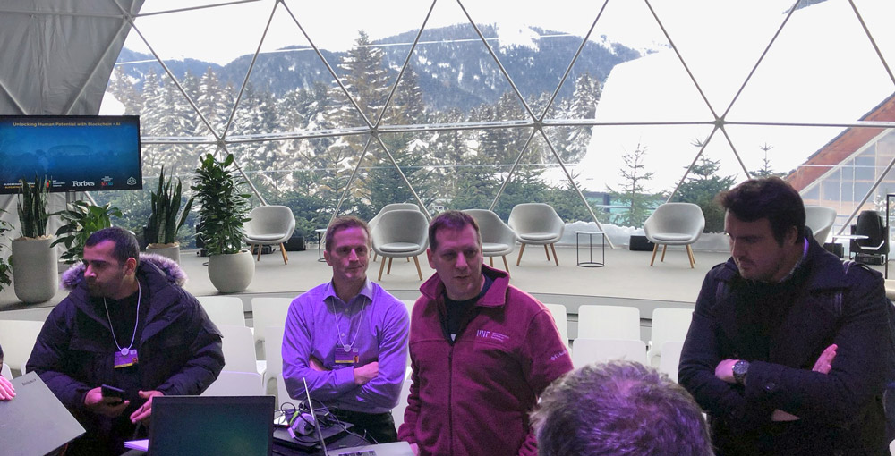

Imagination in Action
Creating a tech-enabled future connected by a common human thread.
A new community of "applied utopians" are creating a new human-centered reality outside of traditional hierarchy and authority, using tools such as blockchain and AI. On April 27 at the top floor of MIT's Media Lab we will bring the best of these builders togeher in order to help us understand these new possible worlds.

Next Event ↴
- Date:
- Saturday, April 27
- Sponsors:
- Forbes, and MIT Trust Data Consortium.
- Venue:
- MIT Media Lab
- Schedule:
- 07:30 – 08:15Registration
08:15 – 08:25Welcome + Davos Update (Sandy + John)
08:25 – 11:35Lightning Talks (5 min)
11:35 – 12:30Lunch + Demos
12:30 – 16:30Con't Lightning Talks (5 min)
16:30 – 16:45Closing
On-going video interviews (all-day) - Hosts:
- MIT Professor Alex Pentland, John Werner.
On Sat, Apr 27th, we’ll be bringing the best of Davos to Cambridge, MA and gathering leaders from business, government, academia, media and civil society to deepen their relationships and work more collaboratively towards improving the state of our world through emerging technology.
Our goal is to establish best practices within new technology-enabled environments that are bound together by a common human fabric. This will be achieved by piloting “beta” versions of technology systems in partnership with a wide variety of stakeholders.
↵ Schedule @ MIT 2019
Block {{block.blockNum}}
{{block.title}}
Speakers @ MIT ↴
Future ⮥Past ↴
Davos, Switzerland
January 22, 2019
Blockchain + AI + Human Summit
- Hosts:
- CEO of Tata Consultancy Services Rajesh Gopinathan, MIT Professor Alex Pentland, John Werner.
- Sponsors:
- TCS, Forbes, and MIT Trust Data Consortium.
- Venue:
- The TCS Dome, Panorama Hotel,
Promenade 80,
7270 Davos Platz, Switzerland - Format:
- During the annual meeting of the World Economic Forum (WEF) we will bring together the world's foremost leaders from business, government, academia, media and civil society to deepen their relationships and work more collaboratively towards improving the state of our world.
- Date:
- Tuesday, 22nd January 2019
- Schedule:
- 09:00 - 09:15Registration
09:25 - 02:40Leading Innovator Solutions & ‘Lightning’ Speed Talks (2-5 min)
12:00 - 13:00CEO and visionary “Idea Lab” Panel: The Transformative Power of Digital Technologies
11:30 - 14:00Buffet Lunch & Networking
Ongoing one-on-one video interviews to side
This Blockchain+AI+Human summit will include:
- Michelin-star lunch
- Networking with both the WEF audience and a select group of blockchain and AI innovators
- Program with lightning “TED type” talks (2-5 min) and dozens of demos highlighting real-world data-for-good Blockchain + AI projects, all curated by the MIT Trust Data Consortium (trust.mit.edu) around the theme Blockchain and AI for Good

This will be a spectacular venue, a great group of people, and a very special opportunity to share your ideas and learn from others.
The next Blockchain in Action summit will be held at MIT on April 27th, 2019. Talk to John Werner (jwerner@mit.edu) or Prof. Alex Pentand (pentland@mit.edu) for details and official invitation.
↵ Schedule @ Davos
Block {{block.blockNum}}{{block.title}}
{{block.title}}
⭍ Facilitators
Speakers @ Davos ↴
Demos @ Davos ↴
Chef @ The Event ↴
⭍ Event Coordinators
Davos 2019 ⮥MIT 2018 ↴
in theBartos Theatre
Blockchain & Artificial Intelligence:
Tech Trends Poised To Transform Business and Culture?
Nascent Blockchain applications and AI research have demonstrated the transformative potential of both technologies. Their integration with the physical world will transform sectors such as logistics chains, asset management, data systems, investment, and securitization via cheap, trustworthy, and user-friendly Blockchain algorithms. These new capabilities will drive radical shifts in business and culture on a global scale, offering opportunities for better management, inclusion, transparency and accountability.
Discussions have been synthesized (under Chatham House rules) into an MIT publication and distributed to thought leaders at Davos and elsewhere. The discussion will also lead to a collection of visionary papers authored by speakers, to be published by MIT Press in our Connection Science Imprint series.